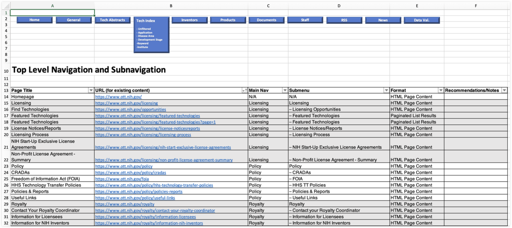
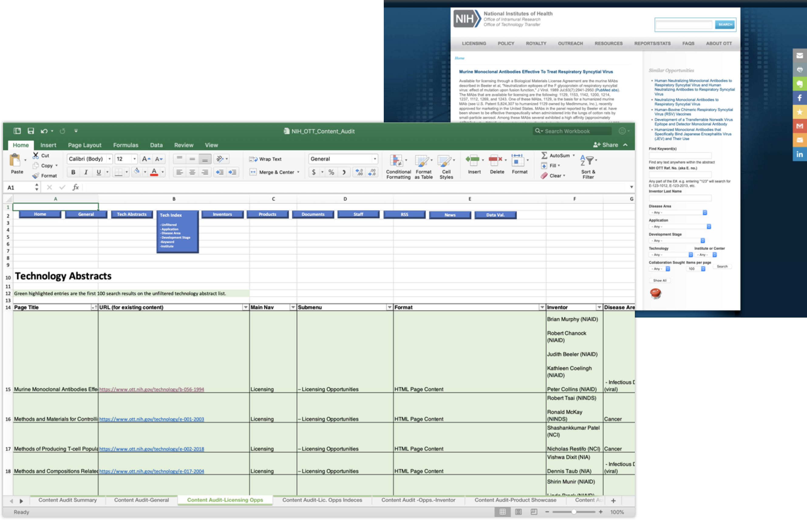
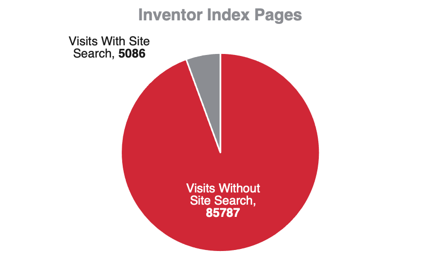
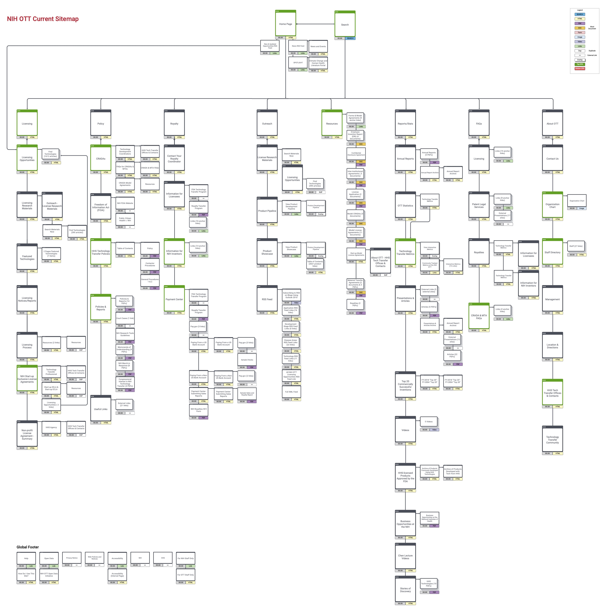
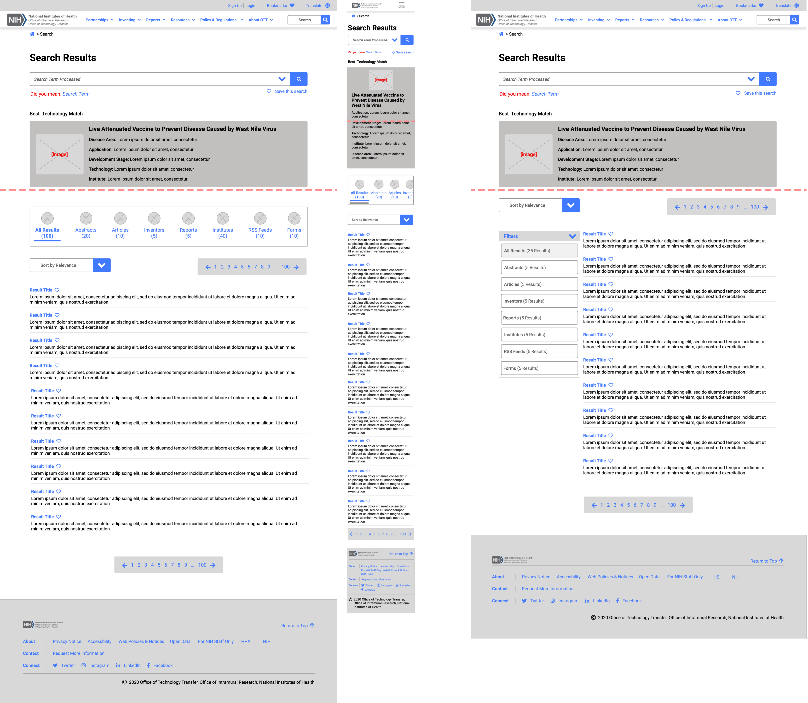
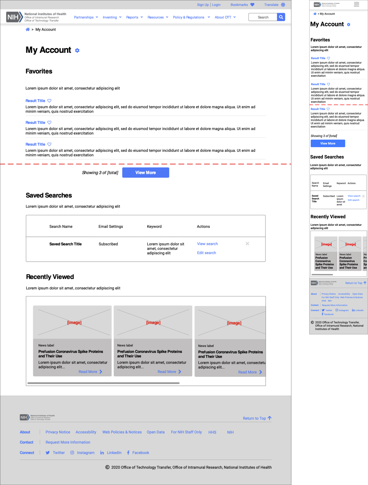
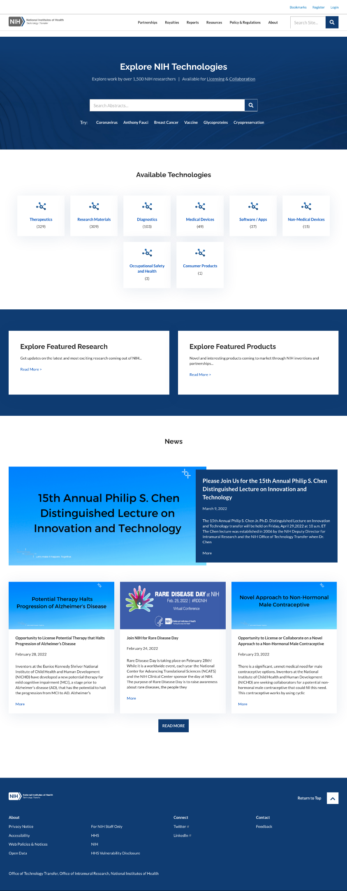
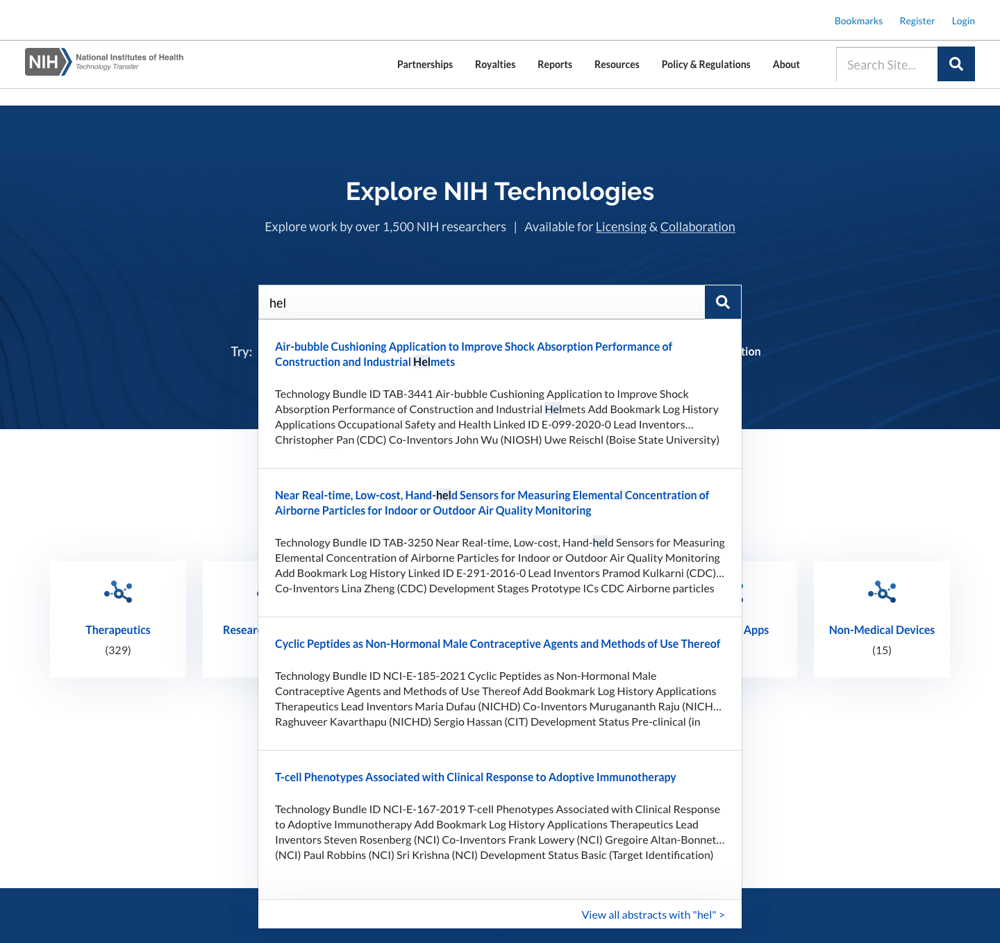

National Institute of Health Office of Technology Transfer
The National Institute of Health Office of Technology Transfer manages the licensing of patented inventions from scientists at various governmental agencies, such as the National Cancer Institute (NCI) and the National Institute for Allergies and Infectious Disease (NIAID). I was tasked with redesigning their site to make it easier for users to successfully find and lisence technology.
Project overview
The National Institute of Health’s Office of Technology Transfer (NIH OTT) facilitates the practical application of research findings from institutes and center affiliated with the NIH, such as the National Cancer Institute (NCI) and the National Institute for Allergies and Infectious Disease (NIAID), via licensing and cooperative research and development agreements (CRADAs.)
The problem
Although the site is home to a robust library of information, users reported difficulty in locating the information needed and were dissatisfied with the lack of through search functionality.
The solution
I thoroughly audited the content to uncover, usability bottlenecks and redesigned the entire site architecture to improved ease of navigation, prioritize search functionality, and provide a robust but more intuitive mega-navigation. I also prepared testing recommendations for a future stage of the project to further validate our design decisions. We were able to bring the user’s experience in line with the usability standards that are essential to providing a positive experience with a large body of content.
Role
UX design lead
Key deliverables
Content audit
Sitemap
Wireframes
Prototype
Tools used
Sketch
inVision
Interpreting the brief
The National Institute of Health Office of Technology Transfer tasked me with redesigning their website to make it easier for visitors to find the information they need to collaborate with inventors on research and development of solutions or license existing inventions for the commercial market.
Key objectives included
Reviewing site usage reports and performance reports, and auditing content to identify priority data and potential problem areas
Designing new information architecture to resolve any observed bottlenecks
Wireframing new page architecture, prioritizing the search functionality and implementing user account functionality
Preparing a comprehensive prototype and user testing considerations for a future stage
Providing UX oversight during creative design and deployment
Conducting the content audit
I conducted a content audit with four key objectives:
Determining the full breadth of content on the site
Exposing any functional or performance challenges in existing page templates
Providing recommendations on removal, consolidation and enhancement of available content
Preparing a comprehensive prototype and user testing considerations for a future stage
Providing recommendations on a revised sitemap per content audit findings
Generating an XML sitemap revealed that over 6,000 pages existed on the site.
The XML Sitemap
The XML Sitemap
I created an excel-based content audit. Pages anchored to the navigation are presented in relation to the current navigation structure. Orphan pages are grouped and presented alongside pages of the same template or type.
Existing site content
The XML Sitemap
Pages anchored to navigation
132 pages are listed in primary and secondary navigation, excluding large groups of like-templated pages.
Date captured
Page title
URL
Main navigation
Submenu
Format
Recommendations/notes

Auditing the Navigation structure
Technology abstracts
1,625 pages detail technology available for licensing. The audit sampled the first 100 unfiltered search results.
Date captured
Page title
URL
Main navigation
Submenu
Format
Disease Area
Application
Development Stage
Technology
Institute
Recommendations/notes

Auditing the Navigation structure
Technology abstract indexes
174 pre-made paginated search results pages list available technology abstracts.
Date captured
Unfiltered/p>
Application
Disease area
Development stage
Keyword
Institute
Date captured
Page title
URL
Main navigation
Submenu
Format
Recommendations/notes
Auditing the technology abtract images
Inventors
3,608 pages list all inventions by each inventor.
Date captured
Page title
URL
Main navigation
Submenu
Format
Recommendations/notes
Auditing the inventor pages
Products
202 pages are in the product showcase including a table of contents and pages for each product.
Date captured
Page title
URL
Main navigation
Submenu
Format
Uses
HHS conttribution
Features
Inventors
HHS institute/agency
Licensee
Market launch
Recommendations/notes
Auditing the product pages
Documents
156 PDF & Word documents linked are to through out the site.
Date captured
Page title
URL
Main navigation
Submenu
Format
Recommendations/notes
Auditing the documents
Staff
47 pages feature staff profiles and indexes of staff profiles organized by last initial.
Date captured
Page title
URL
Main navigation
Submenu
Format
Recommendations/notes
Auditing the staff listing pages
RSS Feeds
66 RSS feed files (.xml) are available for addition to a user’s feed reader.
Date captured
Page title
URL
Main navigation
Submenu
Format
RSS Topic
Recommendations/notes
Auditing the RSS feeds
News
48 news & event articles highlight updates from OTT.
Date captured
Page title
URL
Main navigation
Submenu
Format
Recommendations/notes
Auditing the news pages
Content Audit Findings & Recommendations
Key findings from the audit
Technology abstracts not clearly labeled
Technology search filters not comprehensively covering all options
Breadcrumbs with dead end links for inventor index pages
RSS feed index not listing all feeds
Most articles are text only
Navigation doesn’t consistently guide the user
Recommendations for enhancement
Technology abstract template
Search component & filter list options
Inventor index page template
RSS feed index page template
Article template
Sitewide navigation components
Detailed findings
The majority of site content lies in technology abstracts and inventor listings
page distributions
Navigation Content Distribution: About OTT & Reports/Stats sections have the most navigational touchpoints.
Navigation content
Recommendation: Adjust navigation to encourage engagement with licensing related content
The majority of site content lies in technology abstracts and inventor listings
page distributions
Recommendation: Update the technology abstract template to improve readability
Disease Area Focus of Technology Abstracts: A sample of 100 abstracts revealed that Cancer and Virology are most studied, but18% are difficult to classify.
Technology abstract findings
How I Reviewed Technology Abstracts & challenges encountered
Fixed-list search filters: include disease area, application, development stage, technology, institute/center, seeking collaboration
Disease area: (infectious disease (viral)) inferred from headline
Application: (vaccine) highlighted
Development stage: (available for license) hidden within introduction and does not clearly match search filter options
Technology: not highlighted, difficult to ascertain
Institute: Displayed with inventors, some inventors not associated with an institute
Free-form search filters: include reference number, inventor and keywords
Seeking collaboration: is highlighted with a brief narrative.
DIffculties in reviewing abstracts for the audit
37% of inventor inventory pages are currently not returning results.
inventor page findings
Discovering Broken Inventory Pages
Technology abstract links to more inventions by inventor
Inventor’s inventory breadcrumbs include link to current page(3) and “NIH Opportunities from Inventor” (4).
This page is broken and returns no results.
This is broken and returns no results, resulting in 1,329 unnecessary internal links
Probelms with inventory pages
Recommendations: Verify path of all breadcrumbs and delete 1,329 broken inventor inventory pages
Count of Product Releases by Institutes and Centers (ICs):4 out of 11 ICs are responsible for94% of published product releases.
Recommendations: Explore IC user experience to guide future improvements to components and content
Submitting abstracts
Reporting licensing and product releases
Receiving royalty payments
Count of Document Types: 81% of site documents are PDFs.
Document findingss
Recommendation: Improve engagement by converting documents to HTML content (graphs, charts and other media) within site pages
Common Discrepancies Found in Listing RSS Feeds: 10 RSS feeds were omitted from feed library.
RSS feed dindings
Recommendation: Recommendation: Consolidate all RSS feeds on one page.
The Inclusion of Multimedia Content in Articles: 69% of news articles don’t contain multimedia.
multimedia-findings
Recommendation: Include multimedia in articles to improve engagement
Global navigation presented several problems
The content audit revealed many instances where we may improve the navigation structure to meet the strategic priority to facilitate more resonant matches between potential partners and NIH’s technology that ultimately leads to more licensing agreements.
Current experience
Information not where expected
Navigational logic inconsistent
Opportunities for iprovement
Reconsider top level navigation content grouping
Provide more detailed descriptions at the top level and drop-down state
Present options with consideration of anticipated user flows
Next steps after the content audit
After presenting the audit to the client, I awaited their consolidated feedback and prepared to present revised data architecture and sitemap updates based on competitive analyses, this content audit and site traffic analytics findings.
Refining site architecture to address our discoveries
I began revising site architecture with 4 key objectives
Document current site architecture
Understand how current site architecture impacts the current user behavior
Document key user flows
Provide revised sitemap per heuristic, competitive, content and analytical findings
In addition to the finding of the content audit, I considered the heuristic, competitive and site traffic analyses to make an informed recommendation.
A heuristic and competitive analysis revealed several oportunities that would help to drive better engegement with lisencing and collaboration content: easy access to search, improved primary navigation with a robust mega-navigation and allowing users to save content for later access.
New feature impact to feasibility matrix
Site analytics show the value of site search
Only about 5k visitors (6% of total traffic) in the last 16 months interacted with any site search functionality. This has resulted in lower licensing-related content engagement than desired.

Site search trafficUser visit durationc
Considering some of the high-level user flows
Categorizing search results
Search results flow
User login
User login flow
Saved search flow for logged in users
Saved search flow for logged in users
Saved search flow for users not logged in
Expected to remain in favor, over third-party cookies, used for ad targeting across sites
Saved search flow for users not logged in
Revising the navigation structure
I recommended revising the navigation to be more intuitively organized and prioritize the content that users most pressingly need to find.
Current navigation
Licensing
Policy
Royalty
Resources
Reports/stats
FAQs
About OTT
The existign navigation
Recommended revised navigation
Licensing
Inventing
Reports
Resources
Policy & Regulations
About OTT
Understanding Recommended Changes by Section
Each existing top level navigation section was explored for opportunities to:
Consolidate content
Remove duplicate and broken content
Capitalize on existing content placement successes
Each navigation section is marked to indicate the recommended disposition of the content therein.
Navigation change symbols
Recommended changes to the licensing submenu
Revision creates a more comprehensive presentation of the licensing experience at the NIH OTT; Redundant pages are removed or consolidated.
Navigation changes licensing
Recommended changes to the policy submenu
The policy section currently includes information that is well placed, but cooperative research agreement information is best relocated to the inventing section.
Navigation changes policy
Recommended changes to the royalty submenu
Information related to royalty payments made in connection with licensing has been relocated to the Licensing section. Information related to receiving royalty payments remains in this section, retitled as Inventing to encompass information relating to the entire experience.
Navigation changes royalty
Recommended changes to the outreach submenu
Its not clear what user persona(s) and flow(s) are being served by this section and the content fits more seamlessly into other sections such as Licensing and Resources.
Navigation changes outreach
Recommended changes to the resources submenu
Resources useful to visitors extend beyond just documents and include video libraries, articles and feeds. The reimagined resources section accounts for the broader spectrum of resources available throughout the site.
Navigation changes resources
Recommended changes to the reports submenu
Topics would be more easily navigated if grouped into three manageable categories, annual reports, statistics & metrics and commercial outcomes.
Navigation changes reports
Recommended changes to the FAQs submenu
The FAQs section includes a summary page with a list of the subpages in the section. This section is best consolidated into one FAQs page, housed under the About OTT section.
Navigation changes FAQs
Recommended changes to the about submenu
The About OTT section currently includes information about the organizational structure and contacts at the OTT. Much of this information can be consolidated and listed alongside frequently asked questions about the NIH OTT.
Navigation changes about
The original sitemap

Original sitemap
The revised sitemap
Revised sitemapt
Next steps after revising site architecture
After presenting the sitemap to the client, I awaited their consolidated feedback and prepared to present revised wireframes.
Preparing wireframes to support the revised architecture
I began wireframing with the primary objective of addressing site optimizations identified during discovery & earlier architecture steps.
Considerations for the homepage wires included:
Improve licensing conversion by directing users to abstracts through technology search within page hero section
Designing a user friendly and intuitive page infrastructure
Considerations for the search results page wireframe included:
Provide an easy to scan and filter index of results
Allow users to easily bookmark content
Ensure design is responsive

Search results wireframe
Considerations for the technology abstract wireframe included:
Improve scanability of page content
Encourage user conversion from the abstract page
Ensure design is responsive
Abstract wireframe
Considerations for the homepage wires included:
Provide an easy to scan and filter index of technologies
Allow users to easily bookmark content
Ensure design is responsive
Technology index wireframe
Considerations for the user dashbaord wireframe included:
Prepare for account and cookies-based users
Allow users to save content for later consumption
Provide a reference for browsing history

User dashboard wireframe
Considerations for the contact page wireframe included:
Reduce steps for user to contact NIH OTT
Protect user privacy
Ensure design is responsive
Contact wireframe
Considerations for the login wireframe included:
Reduce barriers to entry for users to login
Keep forms short and intuitive
Ensure design is responsive
Login wireframe
Considerations for the signup wireframe included:
Reduce barriers to user enrollment
Keep forms short and intuitive
Ensure design is responsive
Signup wireframe
Next steps after preparing the wireframes
After presenting the wireframes to the client, I awaited their consolidated feedback and prepared to present a prototype for stakeholder testing.
Evaluating the design in an interactive prorotype
At this stage in the project we’ve achieved some important progress toward our initial objectives, but creating a prototype brought us one step closer to evaluating the success of our proposed design:
Our design has this far solved several problems:
Homepage: Improved licensing conversion by directing users to abstracts through technology search within page hero section
Site Search Results: Provided an easy to scan and filter index of results and allow users to easily bookmark content
Technology Abstract: Improved scanability of page content
Technology Abstract Index/ Technology Search results: Provided an easy to scan and filter index of technologies
User Dashboard: Prepared a dashboard suitable for for account and cookies-based users
Contact page: Reduced steps for user to contact NIH OTT
Sign in/ Sign up: Reduced barriers to entry
I shared the Sketch file with a creative designer, who began incorporating brand colors, typography and iconography and I assembled those work in progress designs into an inVision prototype.
The prototype will:
Link together static wireframes
be a useful activity at all stages of wireframing, but is best done early
Help validate or disprove design decisions
Allow for user testers to provide feedback
The prototype will not necessarily be a:
A presentation of final look & feel
Going to validate your expectations
I underwent this exercise to:
Further opportunity to pressure test wireframes
Explore how wireframes relate to one another
Create sharable asset for stakeholder and user testing
The prototype is designed to demonstrate eight key task flows
Enter a technology search term and run search
Select a recommended search term and run search
Apply filters to a technology search
Technology type: vaccine
Disease area: virus
Stage: In vivo data available human
Run a sitewide search and filter results by content type
Abstracts
Article
Reports
Explore the primary navigation and identify where to find key information like licensing opportunities, statistics and where to submit research
Sign up for a new account
View the users account dashboard and identify recently viewed and saved content, as well as delete a saved search.
View an abstract and identify key attributes and how to contact a representative for more information (Live Attenuated Vaccine to Prevent Disease Caused by West Nile Virus)
Looking ahead: Proposed user testing
Although stakeholder testing of the prototype can yield valuable feedback, nothing replaces true user feedback, so I prepared user testing recommendations in anticipation of our timeline and budget supporting the addition of this vital step in the future.
Prototype exported from inVision and shared with a tester panel through Maze
Prototype shared with a minimum of 20 users per test for gathering data of statistical significance.
Information revealed
Percentage of success
Direct Success: testers who completed the mission via the expected path(s)
Indirect Success: testers who completed the mission via unexpected path(s), but still reached the final screen
Give-up / Bounce: testers who didn't complete the mission because they left or gave up
Answers to open & multiple choice questions
Direct questions such as “which of the below technology abstract properties is most important to your review?”
Any additional information they wish to share.
Heatmaps showing user journeys
Metadata for individual users, including
Browser
Language
System
The final creative layout
The creative team continued work on the final layout and we collaborated with the development team on handoff via Sketch Cloud. After several rounds of user acceptance testing and collaboration with the development team to modify components to better function within Drupal 9, the site went live at ott.nih.gov.

Final homepage layoutGlobal navigation homepage layout

Final homepage layoutFinal homepage layoutFinal homepage layout
Key takeaways
Projects involving large libraries of content have the potential to become unwieldy. Individual sections of the site can take on a life of their own and seemingly evolve over time to operate under a different set of usability expectations than other parts of the site. But as is the case with most UX projects, the solutions lay in the data. This it true for small and large projects alike, but a project of this scale provides us ample opportunity to observe inconsistent user experiences and the poor business outcomes they create at scale. This was an excellent examples how we can leverage a content audit to identify hidden inefficiencies for a large scale redesign.